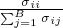
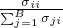

4More precisely, given a batch of data {(x1,y1),..., (xB,yB)} with images x and captions y, we train the image encoder gand text encoder v with the loss ℓ =∑i=1B +∑i=1B, where σij=exp⟨g(xi),h(yj)⟩. We also use alearnable temperature parameter as in Radford et al.[104].